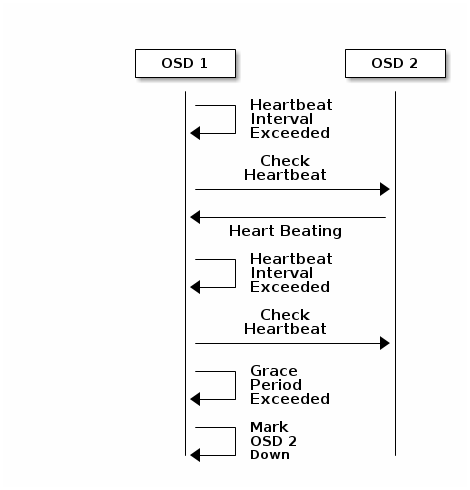

Ceph OSD daemons need to ensure that the neighbouring OSDs are functioning properly so that the cluster remains in a healthy state.
For this, each Ceph OSD process (ceph-osd) sends a heartbeat signal to the neighbouring OSDs. By default, the heartbeat signal is sent every 6 seconds [1], which is configurable of course.
If the heartbeat check from one OSD doesn’t hear from the other within the set value for `osd_heartbeat_grace` [2], which is set to 20 seconds by default, the OSD that sends the heartbeat check reports the other OSD (the one that didn’t respond within 20 seconds) as down, to the MONs. Once an OSD reports three times that the non-responding OSD is indeed `down`, the MON acknowledges it and mark the OSD as down.
The Monitor will update the Cluster map and send it over to the participating nodes in the cluster.

When an OSD can’t reach another OSD for a heartbeat, it reports the following in the OSD logs:
osd.510 1497 heartbeat_check: no reply from osd.11 since back 2016-04-28 20:49:42.088802
In Ceph Jewel, the MONs require a minimum of two ceph OSDs report a specific OSD as down from two nodes which are in different CRUSH subtrees, in order to actually mark the OSD as down. These are controlled by the following tunables :
From ‘common/config_opts.h’:
[1] OPTION(mon_osd_min_down_reporters, OPT_INT, 2) // number of OSDs from different subtrees who need to report a down OSD for it to count
[2] OPTION(mon_osd_reporter_subtree_level , OPT_STR, “host”) // in which level of parent bucket the reporters are counted
Image Courtsey : Red Hat Ceph Storage 1.3.2 Configuration guide